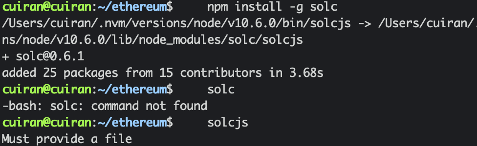
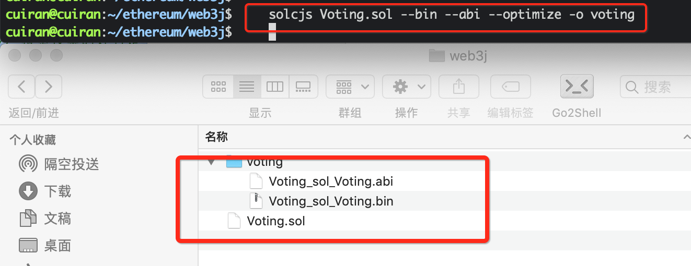
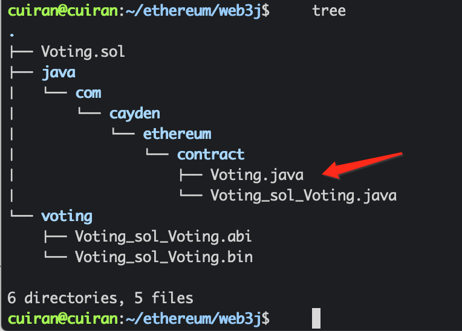

4. 投票项目实战¶
4.1. 投票智能合约编写¶
pragma solidity >=0.4.22 <0.6.2;
contract Voting {
mapping (bytes32=>uint8) public votesReceived;
//存储候选人名字的数组
bytes32 [] public candidateList;
//构造函数 初始化候选人名单
constructor (bytes32[] memory candidateNames) public{
candidateList=candidateNames;
}
//查询某个候选人的总票数
function totalVotesFor(bytes32 candidate) public view returns(uint8){
require(validCandidate(candidate) == true);
return votesReceived[candidate];
}
//为某个候选人投票
function voteForCandidate(bytes32 candidate) public{
assert(validCandidate(candidate)==true);
votesReceived[candidate]+=1;
}
// 检索投票的姓名是不是候选人的名字
function validCandidate(bytes32 candidate) public view returns (bool) {
for(uint i = 0; i < candidateList.length; i++) {
if (candidateList[i] == candidate) {
return true;
}
}
return false;
}
}
4.2. solc命令的使用¶
1、首先使用该命令需要安装solidity编译工具solc
npm install -g solc

2、solc编译命令：
solcjs <Solidity文件地址>.sol --bin --abi --optimize -o <输出文件夹路径>/
编译如图所示：

4.3. web3j的命令行工具打包¶
1、首先安装web3j 命令工具
curl -L https://get.web3j.io | sh
2、如何使用，查看帮助
Usage: solidity generate [-hV] [-jt] [-pt] [-st] -a=<abiFile>
[-al=<addressLength>] [-b=<binFile>]
[-c=<contractName>] -o=<destinationFileDir>
-p=<packageName>
-a, --abiFile=<abiFile> abi file with contract definition.
-b, --binFile=<binFile> bin file with contract compiled code in order to
generate deploy methods.
-c, --contractName=<contractName>
contract name (defaults to ABI file name).
-o, --outputDir=<destinationFileDir>
destination base directory.
-p, --package=<packageName>
base package name.
-al, --addressLength=<addressLength>
address length in bytes (defaults to 20).
-jt, --javaTypes use native Java types.
Default: true
-st, --solidityTypes use solidity types.
-pt, --primitiveTypes use Java primitive types.
-h, --help Show this help message and exit.
-V, --version Print version information and exit.
3、开始打包代码
web3j solidity generate -b voting/Voting_sol_Voting.bin -a voting/Voting_sol_Voting.abi -c Voting -o java -p com.cayden.ethereum.contract
生成对应的java类

4.4. 异常汇总¶
java.lang.RuntimeException: java.lang.RuntimeException: Error processing transaction request: insufficient funds for gas * price + value 这个是以太坊手续费不足异常（insufficient funds）